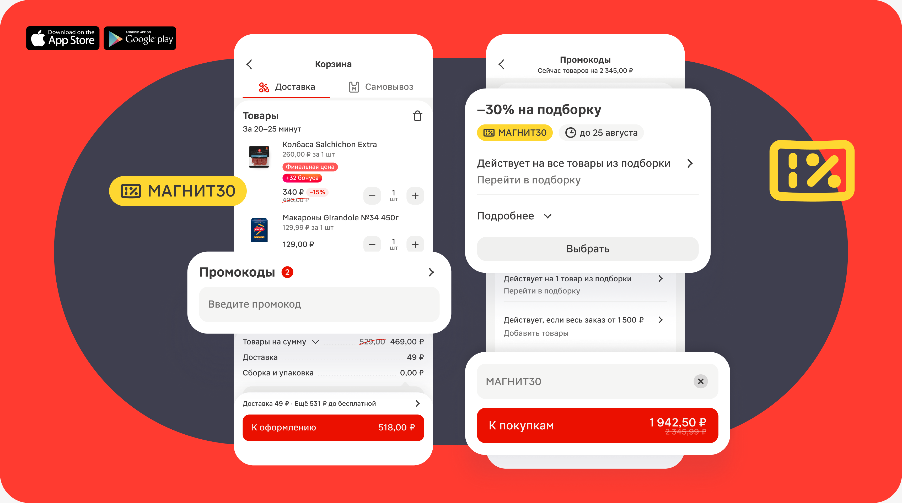
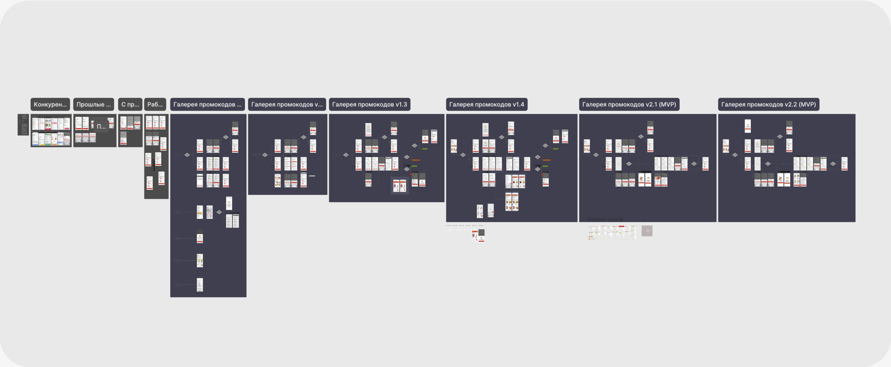
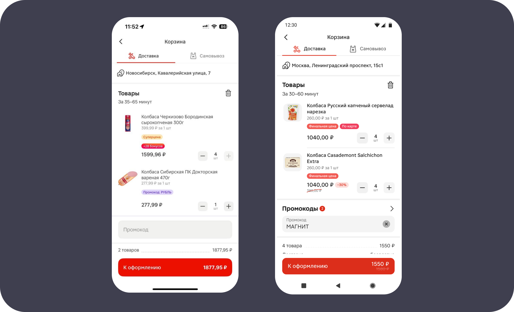
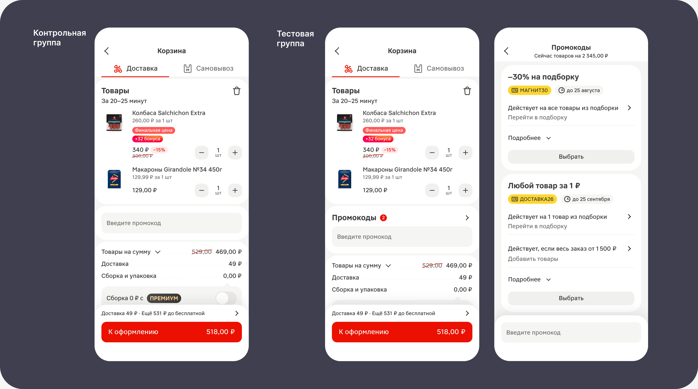
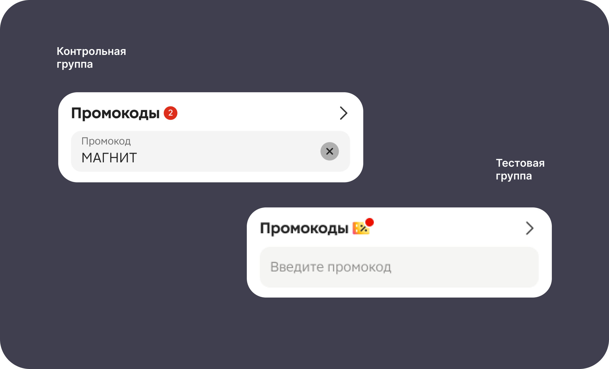
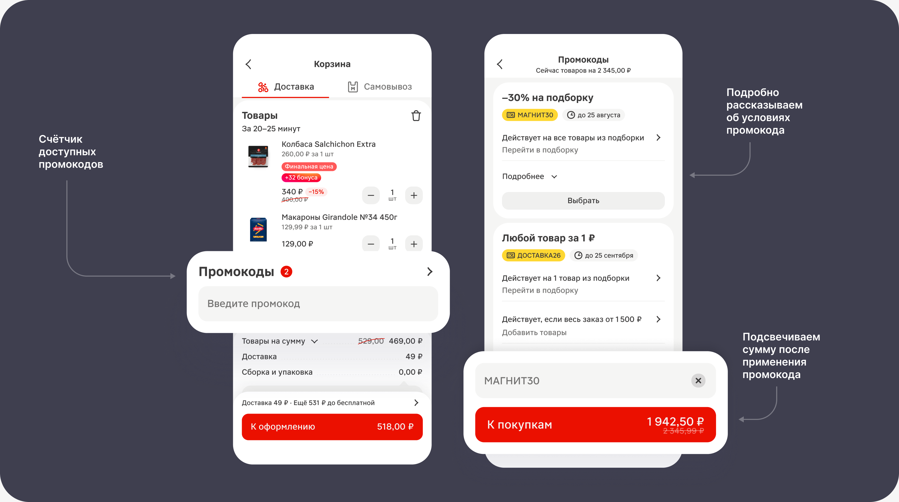

Промокоды: от ошибок к росту CR и GMV
Магнит — один из лидеров российского ритейла. По состоянию на 2021 год «Магнит» — третья по выручке частная компания России. Магнит работает более чем в 4000 населённых пунктов и ежедневно обслуживает свыше 18 млн покупателей.
Магнит OMNI — IT-группа «Магнита», которая создаёт единый цифровой опыт для клиентов. Приложение «Магнит: акции и доставка» насчитывает 24 млн активных пользователей ежемесячно.
Проект
Магнит: Акции и доставка
Роль
Дизайн-лид (руководитель дизайн-группы)
Скоуп
Ресерч, дизайн-вижн, проектирование, тесты, ревью
Результат
CR/FAR: +18, GMV+, AOV+

Контекст
Промокоды — классический инструмент роста в e-com. Они должны мотивировать пользователя завершить покупку. Но в нашем случае происходило обратное. Из 60% новых пользователей, использовавших промокоды, 65% сталкивались с ошибками при их применении. Промокод, который должен мотивировать к покупке, становился причиной отказа от неё в самом конце воронки — на этапе оформления заказа.
На проблему с промокодами обращало внимание до 40% пользователей приложения. Вопросы по ошибкам прокодов были одними из наиболее высокочастотных среди заявок в контакт-центр.
Задача
Повысить CR в применяемость промокодов.
Решение
Проведя анализ ошибок и запросов пользователей, а также вместе отсмотрев продукты конкурентов, мы с продактом команды Денисом сформулировали принцип: пользователю нужно не просто избежать ошибки — ему нужно быть уверенным, что он выбрал лучший вариант. Перед тем как прийти к финальной идее, мы рассмотрели несколько подходов:
✦ Выделение точки входа;
✦ Автоприменение лучшего промокода;
✦ Подсказки и валидация в поле ввода;
✦ Скрытие невалидных промокодов;
✦ Рекомендации подходящих промо.
Основной рабочей гипотезой была выбрана «галерея промокодов» — место, где можно увидеть все доступные промокоды, ознакомиться с условиями их применения и выбрать подходящий промокод, не вводя его вручную в момент оформления заказа, на финале воронки. Гипотеза была выдвинута ещё нашими пользователями в опросах и мелькала среди инсайтов на опросах и юзабилити-тестах.

Варианты дизайн-решений
Я подготовил несколько направлений дизайн-решения в виде нескольких экранов концептов, из которых мы внутри команды выбрали наиболее релевантное и показали его смежным командам — платформы, корзины и каталога. В ходе обсуждений было согласовано MVP-решение с базовым функционалом для быстрой проверки на юзабилити-тесте:
✦ оставили одну ключевую точку входа — в корзине;
✦ отказались от рекомендаций товаров;
✦ не делали автоматический подбор лучшего промокод.
Далее дизайнеру команды Марине я поставил задачу собрать галерею со всеми корнер-кейсами и состояними и передать в разработку.
A/B тест
Когда макеты были разработано и протестированы, мы раскатали A/B тест на небольшую группу пользователей в Краснодаре Чтобы понять, видят ли пользователи точку входа в галерею и каков CR в неё, мы с продактом решили запустить A/B-тест. Мы раскатили A/B тест на небольшую группу пользователей в Краснодаре на две недели.

Макеты для первого A/B-теста, позволяющие проверить CR в галерею
Результат двухнедельного теста показал высокие результаты в тестовой группе относительно контрольной, что позволило сделать первые позитивные выводы о гипотезе.
Юзабилити-тест
Теперь нам требовалось получить данные об ошибках, с которыми встречаются пользователи внутри галереи. Для этого лучше всего подходил модерируемый юзабилити-тест. Марина, старший дизайнер команды, в соответствии с поставленной ей задачей доработала макеты, собрала прототип и вместе с командой исследователей провела модерируемые удалённые UX-тесты.
Мы с продактом обсудили нашу задачу с исследователем, описали её и запустили серию юзабилити-тестов с десятью респондентами. Несколько наблюдений о поведении пользователей:
✦ пользователи по привычке пытались вводить промокод вручную;
✦ не всегда замечали ограничения (например, минимальную сумму);
✦ ожидали, что система сама подскажет лучший вариант.
После тестов мы доработали сценарии и интерфейс — и пошли в A/B-эксперимент для проверки базовых гипотез:
— Если убрать ручной ввод и показать доступные промокоды, снизится количество ошибок;
— Если сделать точку входа более заметной, конверсия в поле ввода повысится;
— Если отобразить количество промокодов рядом с инпутом промокода, конверсия повысится.

Макеты для A/B-теста. Слева контрольная группа (без галереи), справа тестовая
Мы запустили эксперимент со следующими параметрами:
✦ 20% аудитории;
✦ формат «Магнит Экспресс»;
✦ iOS и Android;
✦ длительность — 7 дней.
Результат: ошибки в контрольной группе при применении промокодов заметно снизились. При этом в части сценариев обнаружились проблемные зоны. Мы с Мариной доработали дизайн, чтобы сделать механику промокодов максимально предсказуемой для пользователя. После этого мы провели второй A/B-эксперимент, в котором проверили следующие гипотезы:
если отобразить информацию о текущей сумме скидки промокода, это повысит конверсию;
изменение иконки рядом с инпутом промокода повысит конверсию в галерею промокодов;
отображение условий промокода снизит количество отказов.

Макеты для второго A/B-теста. Слева контрольная группа (с текущей иконкой), справа тестовая с новой
Все гипотезы подвердились кроме одной: жёлтая иконка сработала почти на 40% хуже, чем красный круглый counter.

Макеты для финального эксперимента
Результат
По итогам теста мы подтвердили, что вместе с ростом успешности применения промокода (Feature Adoption Rate или Conversion в применение) на 18.08% фиксируется и рост ARPU (средней выручки в расчёте на одного пользователя), AOV (среднего чека) и конверсии в заказ. Так мы превратили источник ошибок в драйвер роста GMV — общей суммы продаж.
CR/FAR:
+18%
Рост (NDA)
GMV
Рост (NDA)
ARPU
Рост (NDA)
AOV
Положительный эффект усилился, и было принято решение начинать роллаут на 100% аудитории.
Итоги: четыре инсайта, изменивших наш подход
Этот кейс оказался не столько про промокоды, сколько про поведение пользователей. Несколько инсайтов:
✦ Пользователи хотят быть уверены, что мы работаем в их интересах;
✦ Промокоды про ощущение выгоды, а не про скидку;
✦ Важно не просто дать скидку, а убрать FOMO (страх упустить интересное и важное);
✦ Контроль часто важнее автоматизации.
В итоге фокус на устранении фрустрации пользователей привёл к росту заказов и GMV. Мы не просто увеличили использование промо — мы вернули пользователю контроль и уверенность в моменте покупки. На текущий момент решение масштабировано и уже даёт измеримый бизнес-эффект, при этом остаётся базой для дальнейшего развития.
Следующие шаги, которые мы рассматриваем:
✦ Отображение статус-бара для индикации условий промокода;
✦ Автоматический выбор лучшего промокода;
✦ Персонализированные предложения;
✦ Рекомендации товаров под условия промо;
✦ Интеграция с другими механиками лояльности.